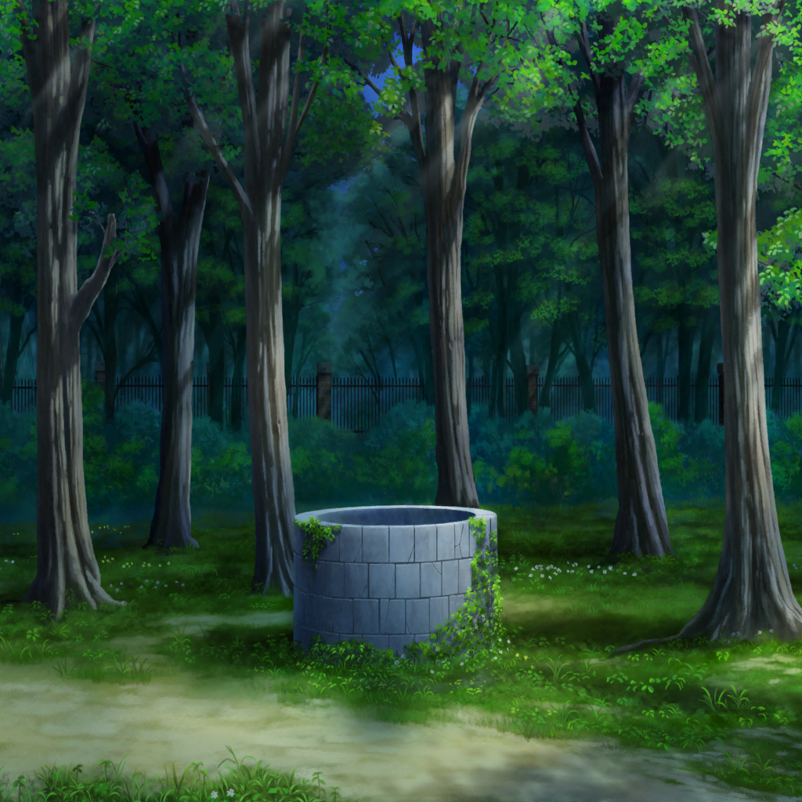

羽丘女子学園 井戸
麻弥
井戸の噂の正体は……これです！
リサ
？ それって台本……だよね？
麻弥
薫さん、この台本に見覚えはありませんか？
薫
もちろん、覚えているよ。私が演じた舞台の台本だ。
私の幽霊役が評判でね、校内で話題になったほどさ
リサ
へえ、どんな幽霊だったの？
薫
髪の長い女性の霊だよ。
胸元に血のように赤い花のブローチを付けたね
リサ
赤い花のブローチ？
薫
ああ、古井戸のそばで夜な夜な現れるという儚い役だったんだ
蘭
井戸のそば……？？
麻弥
話を聞いていて、どこかで聞いたことがあると思ったんです。
そして、部室の片付けを手伝っていて、見つけたんですよ
麻弥
この舞台に使った井戸のセットとその時の写真を。
ほら、これです。見てください
日菜
これって……！
蘭
この写真の人って瀬田さん……？
リサ
なんか話に聞いた井戸の幽霊とそっくりだけど……
麻弥
だから、井戸の幽霊は薫さんなんですよ！
薫・リサ・日菜・蘭
ええっ！？
麻弥
薫さん、このあたりで芝居の練習をしてるって言ってましたよね？
薫
ああ、この舞台の時もここで練習に励んでいたよ。
役に入るために衣装を着てね
蘭
もしかして、それを見た生徒が幽霊だと勘違いしたってこと……？
麻弥
たぶん、そうだと思います。
薫さん、本番前は熱心に稽古をしてますから、
それで目撃情報が多いのではないかと……
リサ
で、でも、それじゃ引きずりこまれた生徒っていうのは？
麻弥
それはまだわからないんですが……
何か思い当たることはありませんか？
薫
思い当たること……
薫・日菜
……あっ！！
薫
思い出したよ！
日菜
うん、あたしも思い出した！
麻弥
えっ、なんで日菜さんまで？
日菜
えーと、それが実は〜……
数ヶ月前
日菜
わあ、今日は星がよく見えそう〜！
望遠鏡持ってきたし、どこで天体観測しようかな〜！
？？？
ウウウ、ウオオオ……！！
日菜
？ なんか聞こえた？
確か、あっちは井戸があるとこだよね？
？？？
ウウウ、ウオオオ……！！
呪ってやる……呪ってやるぞぉ……！！
薫
……ふぅ。
我ながらなんて素晴らしい演技なんだ。ああ、儚い……
日菜
あー！ 誰かいる！
薫
え……？
日菜
ねぇねぇ、こんな時間まで何やってるのー！？
薫
なっ、えっ、な……わああ！！？
日菜
え、ちょっと、後ろ向きに走ったら、危ないって……う、わあっ！？
日菜
うう、いたたたた……大丈夫？
薫
あ、ああ……な、なんだ、子猫ちゃんか……
いきなり現れるから、てっきりお化……
日菜
おば？
薫
ああ、いや、こっちの話さ。
取り乱してしまって、すまない
薫
井戸につまずいて中に落ちてしまうなんて……
助けようとした君まで巻き込んでしまったね
日菜
ううん、こっちこそ脅かしちゃったみたいで、ごめん。
でも、埋められてる井戸でよかったよー
日菜
あれ？ っていうか、４月から同じクラスの……？
薫
ああ、どこかで見た子猫ちゃんだと思ったら……
麻弥
……そんなことがあったんですね
日菜
うん、あそこで薫くんと初めて話したんだよね
薫
ああ、星降る夜の運命的な出会いだった……
リサ
というか、ちょっと待って……
それじゃあ、井戸の噂の出所って……
日菜
あはは、あたし達だったみたいだね〜！
薫
何気ない出来事も世間を騒がせてしまう。
まったく、儚いさだめだね……
麻弥
ん？ ……あっ！ もう１個、謎が解けました！
リサ
え？ まだなんかあったっけ？
麻弥
話の中にあった墓を探しているっていうところです。
たぶん、儚い……墓ない……墓がない……ということでは？
蘭
瀬田さんの声を聞いた人が勘違いしたってことですか……
薫
儚い真実だね……
リサ
２人とも人騒がせすぎるよ〜
日菜
あははー、ごめんごめん
薫
とはいえ、恐ろしい井戸は存在しなかったんだ。
終わり良ければすべて良し、さ
麻弥
あ、ただ……
リサ
え？ どうしたの？
麻弥
はい、大したことではないのですが、ひとつ……
麻弥
井戸の話が七不思議の１つではないのなら、
別にもう１つ不思議があるはずですよね……？
薫・リサ・蘭
…………！
麻弥
薫さんと日菜さんによって、
うやむやになった不思議がまだ学園のどこかに……
リサ
わ〜〜！ も、もうこの話やめようよ〜〜！！！